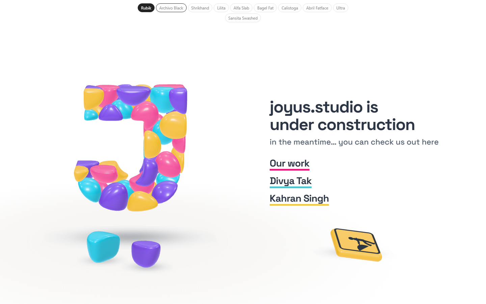
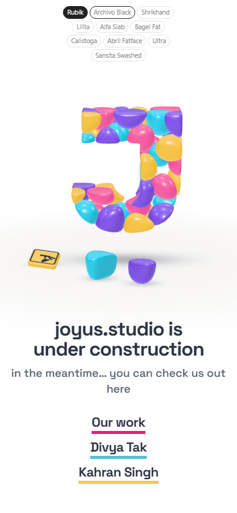
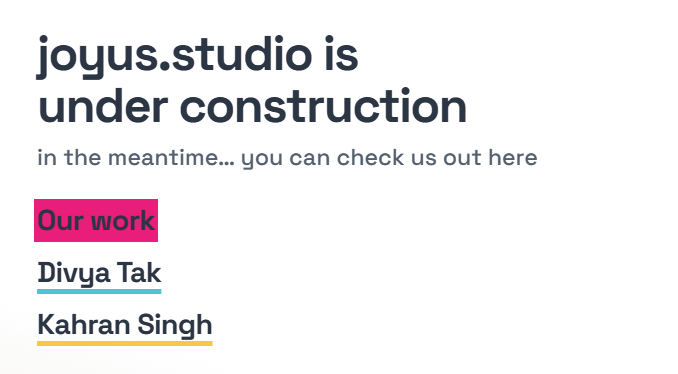
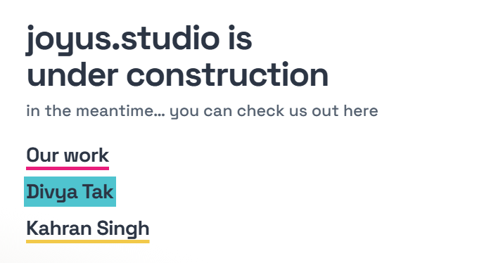

Study 39 · 13 October 2026
Decided, and the sweep
Space Grotesk for the subtitle; the treatment, mesh and edge switches are gone. Only the sign moved under the words; the two blocks are back under the J. The J a bit smaller. On hover a link's colour sweeps in from the left, over the whole word.
Open the page (hover the links)

The sweep


Why "finer" was slow
The finer mesh builds nearly three times the triangles, and the page shows nothing until all forty stones are meshed. It's gone: the smooth edges now come from the exact distance field on the 1024px mask (Study 34), at the old polygon count and about a second of build.
Open
- The sweep: band behind the word (as here), or the text itself changing colour as it passes.
- Smaller enough?
Pictures: shoot.mjs. Test: page-test.mjs, 46 checks in a browser; read by check.cjs.